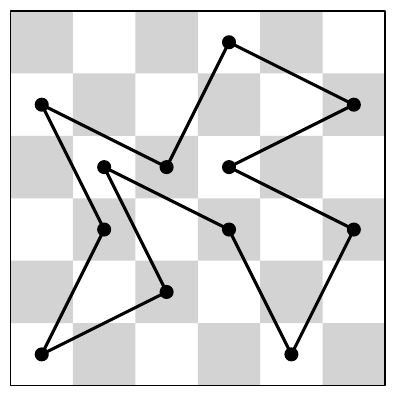

ACM-ICPC World Finals 2018 · Problem J
A well-known puzzle is to “tour” all the squares of an 8 × 8 chessboard using a knight, which is a piece that can move only by jumping one square in one direction and two squares in an orthogonal direction. The knight must visit every square of the chessboard, without repeats, and then return to its starting square. There are many ways to do this, and the chessboard size is manageable, so it is a reasonable puzzle for a human to solve.
However, you have access to a computer, and some coding skills! So, we will give you a harder version of this problem on a rectangular m × n chessboard with an additional constraint: the knight may never cross its own path. If you imagine its path consisting of straight line segments connecting the centers of squares it jumps between, these segments must form a simple polygon; that is, no two segments intersect or touch, except that consecutive segments touch at their common end point. This constraint makes it impossible to visit every square, so instead you must maximize the number of squares the knight visits. We keep the constraint that the knight must return to its starting square. Figure J.1 shows an optimal solution for the first sample input, a 6 × 6 board.

The input consists of a single line containing two integers m (1 ≤ m ≤ 8) and n (1 ≤ n ≤ 1015), giving the dimensions of the rectangular chessboard.
Display the largest number of squares that a knight can visit in a tour on an m × n chessboard that does not cross its path. If no such tour exists, display 0.
6 6
12
8 3
6
7 20
80
2 6
0